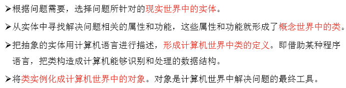
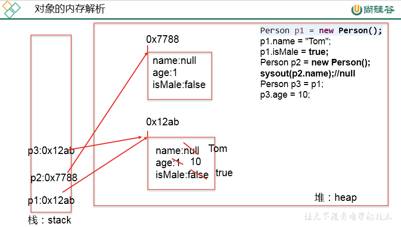
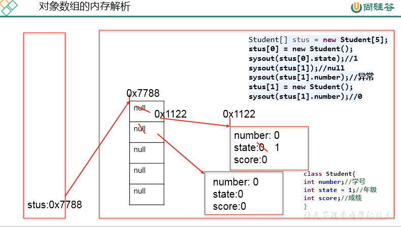
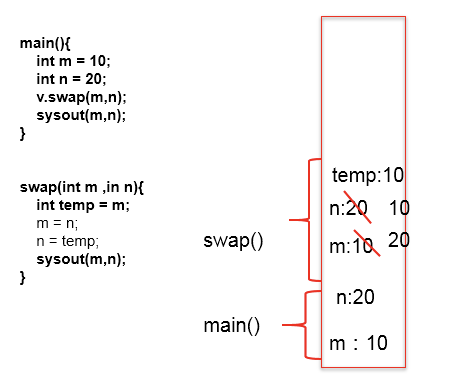
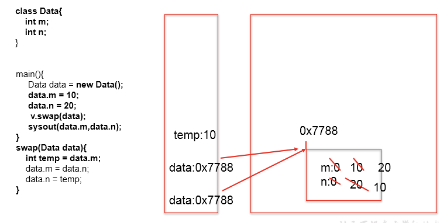
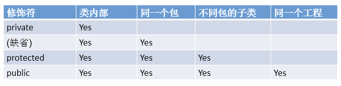
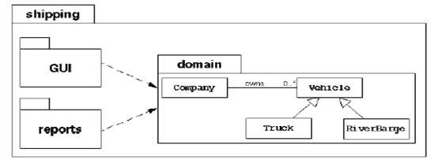
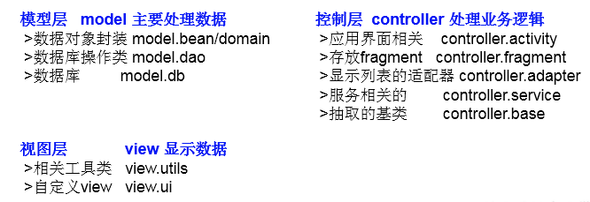
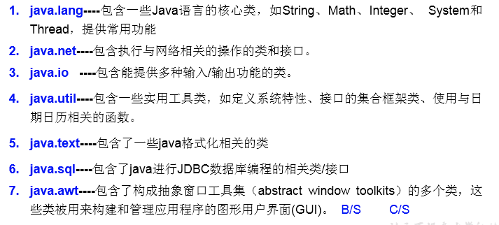

1 类与对象
1.1 基本思想
面向对象学习的三条主线：
- Java类及类的成员：属性、方法、构造器；代码块、内部类
- 面向对象的大特征：封装性、继承性、多态性、(抽象性)
- 其它关键字：this、super、static、final、abstract、interface、package、import等
面向对象与面向过程（理解）：
- 面向过程：强调的是功能行为，以函数为最小单位，考虑怎么做。
- 面向对象：强调具备了功能的对象，以类/对象为最小单位，考虑谁来做。
完成一个项目（或功能）的思路：

理解”万事万物皆对象”：
- 在Java语言范畴中，我们都将功能、结构等封装到类中，通过类的实例化，来调用具体的功能结构
- Scanner,String等
- 文件：File
- 网络资源：URL
- 涉及到Java语言与前端Html、后端的数据库交互时，前后端的结构在Java层面交互时，都体现为类、对象。
1.2 重要概念
面向对象中两个重要的概念：
- 类：对一类事物的描述，是抽象的、概念上的定义
- 对象：是实际存在的该类事物的每个个体，因而也称为实例(instance)
- 面向对象程序设计的重点是类的设计
- 设计类，就是设计类的成员。
二者的关系：对象，是由类new出来的，派生出来的。
面向对象思想落地实现的规则一：
- 创建类，设计类的成员
- 创建类的对象
- 通过“对象.属性”或“对象.方法”调用对象的结构
补充：几个概念的使用说明
- 属性 = 成员变量 = field = 域、字段
- 方法 = 成员方法 = 函数 = method
- 创建类的对象 = 类的实例化 = 实例化类
1.3 对象的创建与对象的内存解析
Person p1 = new Person();
Person p2 = new Person();
Person p3 = p1;//没有新创建一个对象，共用一个堆空间中的对象实体。说明：
- 如果创建了一个类的多个对象，则每个对象都独立的拥有一套类的属性。（非static的）
- 意味着：如果我们修改一个对象的属性a，则不影响另外一个对象属性a的值。
内存解析：


1.4 匿名对象
匿名对象：我们创建的对象，没显式的赋给一个变量名。即为匿名对象。
特点：匿名对象只能调用一次。
举例：
new Phone().sendEmail();
new Phone().playGame();
new Phone().price = 1999;
new Phone().showPrice();//0.0应用场景：
PhoneMall mall = new PhoneMall();
//匿名对象的使用
mall.show(new Phone());
其中，
class PhoneMall{
public void show(Phone phone){
phone.sendEmail();
phone.playGame();
}
}2 类的结构之一：属性
对比：属性 vs 局部变量
相同点：
- 定义变量的格式：数据类型 变量名 = 变量值
- 先声明，后使用
- 变量都其对应的作用域
不同点：
- 在类中声明的位置的不同
- 属性：直接定义在类的一对{}内
- 局部变量：声明在方法内、方法形参、代码块内、构造器形参、构造器内部的变量
- 关于权限修饰符的不同
- 属性：可以在声明属性时，指明其权限，使用权限修饰符。
- 常用的权限修饰符：private、public、缺省、protected —>封装性
- 目前，大家声明属性时，都使用缺省就可以了。
- 局部变量：不可以使用权限修饰符。
- 属性：可以在声明属性时，指明其权限，使用权限修饰符。
- 默认初始化值的情况：
- 属性：类的属性，根据其类型，都默认初始化值。
- 整型（byte、short、int、long：0）
- 浮点型（float、double：0.0）
- 字符型（char：0 （或’\u0000’））
- 布尔型（boolean：false）
- 引用数据类型（类、数组、接口：null）
- 局部变量：没默认初始化值。
- 意味着，我们在调用局部变量之前，一定要显式赋值。
- 特别地：形参在调用时，我们赋值即可。
- 属性：类的属性，根据其类型，都默认初始化值。
- 在内存中加载的位置：
- 属性：加载到堆空间中 （非static）
- 局部变量：加载到栈空间
3 类的结构之二：方法
3.1 方法的声明和使用
方法：描述类应该具的功能。
比如：
- Math类：sqrt()\random() ...
- Scanner类：nextXxx() …
- Arrays类：sort() \ binarySearch() \ toString() \ equals() \ …
举例：
public void eat(){}
public void sleep(int hour){}
public String getName(){}
public String getNation(String nation){}方法的声明：权限修饰符 返回值类型 方法名(形参列表){
方法体
}
注意：static、final、abstract 来修饰的方法，后面再讲。
说明：
- 关于权限修饰符：默认方法的权限修饰符先都使用public
- Java规定的4种权限修饰符：private、public、缺省、protected –>封装性再细说
- 返回值类型： 返回值 vs 没返回值
- 如果方法返回值，则必须在方法声明时，指定返回值的类型。同时，方法中，需要使用return关键字来返回指定类型的变量或常量：“return 数据”。
- 如果方法没返回值，则方法声明时，使用void来表示。通常，没返回值的方法中，就不需要使用return.但是，如果使用的话，只能“return;”表示结束此方法的意思。
- 方法名：属于标识符，遵循标识符的规则和规范，“见名知意”
- 形参列表： 方法可以声明0个，1个，或多个形参
- 格式：数据类型1 形参1,数据类型2 形参2,…
- 方法体：方法功能的体现
方法的使用中，可以调用当前类的属性或方法
- 特殊的：方法A中又调用了方法A：递归方法。
- 方法中，不可以定义方法。
3.2 return关键字的使用
使用范围：使用在方法体中
作用：
- 结束方法
- 针对于返回值类型的方法，使用”return 数据”方法返回所要的数据。
注意点：return关键字后面不可以声明执行语句。
3.3 方法的重载
3.3.1 方法的重载的概念
定义：在同一个类中，允许存在一个以上的同名方法，只要它们的参数个数或者参数类型不同即可。
总结：”两同一不同”。
- 同一个类、相同方法名
- 参数列表不同：参数个数不同，参数类型不同
3.3.2 如何判断是否构成方法的重载
构成重载的举例：
举例一：Arrays类中重载的sort() / binarySearch()；PrintStream中的println()
举例二：
//如下的4个方法构成了重载
public void getSum(int i,int j){
System.out.println("1");
}
public void getSum(double d1,double d2){
System.out.println("2");
}
public void getSum(String s ,int i){
System.out.println("3");
}
public void getSum(int i,String s){
System.out.println("4");
}不构成重载的举例：
//如下的3个方法不能与上述4个方法构成重载
// public int getSum(int i,int j){
// return 0;
// }
// public void getSum(int m,int n){
//
// }
// private void getSum(int i,int j){
//
// }严格按照定义判断：
- 两同一不同。
- 跟方法的权限修饰符、返回值类型、形参变量名、方法体都没关系！
3.3.3 如何确定类中某一个方法的调用
方法名 —> 参数列表
3.4 可变个数行参的方法
使用说明：jdk 5.0新增的内容
具体使用：
- 可变个数形参的格式：数据类型 … 变量名
- 当调用可变个数形参的方法时，传入的参数个数可以是：0个，1个,2个，。。。
- 可变个数形参的方法与本类中方法名相同，形参不同的方法之间构成重载
- 可变个数形参的方法与本类中方法名相同，形参类型也相同的数组之间不构成重载。换句话说，二者不能共存
- 可变个数形参在方法的形参中，必须声明在末尾
- 可变个数形参在方法的形参中,最多只能声明一个可变形参
举例说明：
public void show(int i){
}
public void show(String s){
System.out.println("show(String)");
}
public void show(String ... strs){
System.out.println("show(String ... strs)");
for(int i = 0;i < strs.length;i++){
System.out.println(strs[i]);
}
}
//不能与上一个方法同时存在
// public void show(String[] strs){
//
// }
// 调用时：
test.show("hello");
test.show("hello","world");
test.show();
test.show(new String[]{"AA","BB","CC"});3.5 方法的值传递机制
针对于方法内变量的赋值举例：
System.out.println("***********基本数据类型：****************");
int m = 10;
int n = m;
System.out.println("m = " + m + ", n = " + n);
n = 20;
System.out.println("m = " + m + ", n = " + n);
System.out.println("***********引用数据类型：****************");
Order o1 = new Order();
o1.orderId = 1001;
Order o2 = o1;//赋值以后，o1和o2的地址值相同，都指向了堆空间中同一个对象实体。
System.out.println("o1.orderId = " + o1.orderId + ",o2.orderId = " +o2.orderId);
o2.orderId = 1002;
System.out.println("o1.orderId = " + o1.orderId + ",o2.orderId = " +o2.orderId);规则：
- 如果变量是基本数据类型，此时赋值的是变量所保存的数据值。
- 如果变量是引用数据类型，此时赋值的是变量所保存的数据的地址值。
针对于方法的参数概念：
- 形参：方法定义时，声明的小括号内的参数
- 实参：方法调用时，实际传递给形参的数据
java中参数传递机制：值传递
规则：
- 如果参数是基本数据类型，此时实参赋给形参的是实参真实存储的数据值。
- 如果参数是引用数据类型，此时实参赋给形参的是实参存储数据的地址值。
推广：
- 如果变量是基本数据类型，此时赋值的是变量所保存的数据值。
- 如果变量是引用数据类型，此时赋值的是变量所保存的数据的地址值。
典型例题与内存解析：
【例题1】

【例题2】

3.6 递归方法
递归方法：一个方法体内调用它自身。
如何理解递归方法？
- 方法递归包含了一种隐式的循环，它会重复执行某段代码，但这种重复执行无须循环控制。
- 递归一定要向已知方向递归，否则这种递归就变成了无穷递归，类似于死循环。
举例：
// 例1：计算1-n之间所自然数的和
public int getSum(int n) {// 3
if (n == 1) {
return 1;
} else {
return n + getSum(n - 1);
}
}
// 例2：计算1-n之间所自然数的乘积:n!
public int getSum1(int n) {
if (n == 1) {
return 1;
} else {
return n * getSum1(n - 1);
}
}
//例3：已知一个数列：f(0) = 1,f(1) = 4,f(n+2)=2*f(n+1) + f(n),
//其中n是大于0的整数，求f(10)的值。
public int f(int n){
if(n == 0){
return 1;
}else if(n == 1){
return 4;
}else{
// return f(n + 2) - 2 * f(n + 1);
return 2*f(n - 1) + f(n - 2);
}
}
//例4：斐波那契数列
//例5：汉诺塔问题
//例6：快排4 面向对象的特征一：封装性
4.1 封装的思想
为什么要引入封装性？
- 我们程序设计追求“高内聚，低耦合”。
- 高内聚 ：类的内部数据操作细节自己完成，不允许外部干涉；
- 低耦合 ：仅对外暴露少量的方法用于使用。
- 隐藏对象内部的复杂性，只对外公开简单的接口。便于外界调用，从而提高系统的可扩展性、可维护性。通俗的说，把该隐藏的隐藏起来，该暴露的暴露出来。这就是封装性的设计思想。
问题引入：
当我们创建一个类的对象以后，我们可以通过”对象.属性”的方式，对对象的属性进行赋值。这里，赋值操作要受到属性的数据类型和存储范围的制约。除此之外，没其他制约条件。但是，在实际问题中，我们往往需要给属性赋值加入额外的限制条件。这个条件就不能在属性声明时体现，我们只能通过方法进行限制条件的添加。（比如：setLegs()同时，我们需要避免用户再使用”对象.属性”的方式对属性进行赋值。则需要将属性声明为私有的(private).
–>此时，针对于属性就体现了封装性。
4.2 封装性思想具体的代码体现
- 体现一：将类的属性xxx私化(private),同时，提供公共的(public)方法来获取(getXxx)和设置(setXxx)此属性的值
private double radius;
public void setRadius(double radius){
this.radius = radius;
}
public double getRadius(){
return radius;
}- 体现二：不对外暴露的私有的方法
- 体现三：单例模式（将构造器私有化）
- 体现四：如果不希望类在包外被调用，可以将类设置为缺省的。
4.3 Java规定的四种权限修饰符
权限从小到大顺序为：private < 缺省 < protected < public
具体的修饰范围：

权限修饰符可用来修饰的结构说明：
- 4种权限都可以用来修饰类的内部结构：属性、方法、构造器、内部类
- 修饰类的话，只能使用：缺省、public
5 类的结构之三：构造器
5.1 构造器的使用和作用
构造器（或构造方法）：Constructor
构造器的作用：
- 创建对象
- 初始化对象的信息
使用说明：
- 如果没显式的定义类的构造器的话，则系统默认提供一个空参的构造器
- 定义构造器的格式：权限修饰符 类名(形参列表){}
- 一个类中定义的多个构造器，彼此构成重载
- 一旦我们显式的定义了类的构造器之后，系统就不再提供默认的空参构造器
- 一个类中，至少会有一个构造器。
举例：
//构造器
public Person(){
System.out.println("Person().....");
}
public Person(String n){
name = n;
}
public Person(String n,int a){
name = n;
age = a;
}5.2 属性赋值的顺序
总结：属性赋值的先后顺序
① 默认初始化
② 显式初始化
③ 构造器中初始化
④ 通过”对象.方法” 或 “对象.属性”的方式，赋值
以上操作的先后顺序：① - ② - ③ - ④
5.3 JavaBean
所谓JavaBean，是指符合如下标准的Java类：
- 类是公共的
- 一个无参的公共的构造器
- 属性，且对应的get、set方法
6 关键字：this
可以调用的结构：属性、方法；构造器
this调用属性、方法：this理解为，当前对象或当前正在创建的对象
- 在类的方法中，我们可以使用”this.属性”或”this.方法”的方式，调用当前对象属性或方法。但是，通常情况下，我们都择省略”this.”。特殊情况下，如果方法的形参和类的属性同名时，我们必须显式的使用”this.变量”的方式，表明此变量是属性，而非形参。
- 在类的构造器中，我们可以使用”this.属性”或”this.方法”的方式，调用当前正在创建的对象属性或方法。但是，通常情况下，我们都择省略”this.”。特殊情况下，如果构造器的形参和类的属性同名时，我们必须显式的使用”this.变量”的方式，表明此变量是属性，而非形参。
this调用构造器：
- 我们在类的构造器中，可以显式的使用”this(形参列表)”方式，调用本类中指定的其他构造器
- 构造器中不能通过”this(形参列表)”方式调用自己
- 如果一个类中有n个构造器，则最多有 n - 1构造器中使用了”this(形参列表)”
- 规定：”this(形参列表)”必须声明在当前构造器的首行
- 构造器内部，最多只能声明一个”this(形参列表)”，用来调用其他的构造器
7 关键字：package/import
7.1 package的使用
使用说明：
- 为了更好的实现项目中类的管理，提供包的概念
- 使用package声明类或接口所属的包，声明在源文件的首行
- 包，属于标识符，遵循标识符的命名规则、规范(xxxyyyzzz)、“见名知意”
- 每”.”一次，就代表一层文件目录。
举例：
- 举例一：某航运软件系统包括：一组域对象、GUI和reports子系统

- 举例二：MVC设计模式

JDK中的主要包介绍：

7.2 import的使用
import：导入
- 在源文件中显式的使用import结构导入指定包下的类、接口
- 声明在包的声明和类的声明之间
- 如果需要导入多个结构，则并列写出即可
- 可以使用”xxx.*”的方式，表示可以导入xxx包下的所结构
- 如果使用的类或接口是java.lang包下定义的，则可以省略import结构
- 如果使用的类或接口是本包下定义的，则可以省略import结构
- 如果在源文件中，使用了不同包下的同名的类，则必须至少一个类需要以全类名的方式显示。
- 使用”xxx.*”方式表明可以调用xxx包下的所结构。但是如果使用的是xxx子包下的结构，则仍需要显式导入
- import static:导入指定类或接口中的静态结构:属性或方法。